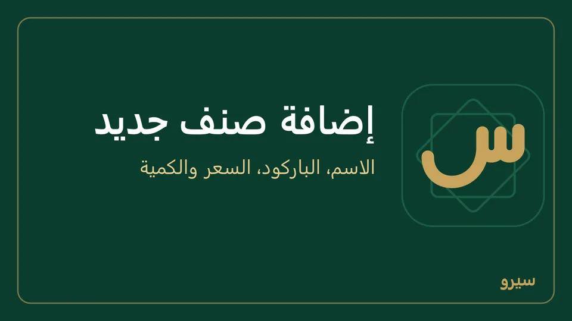
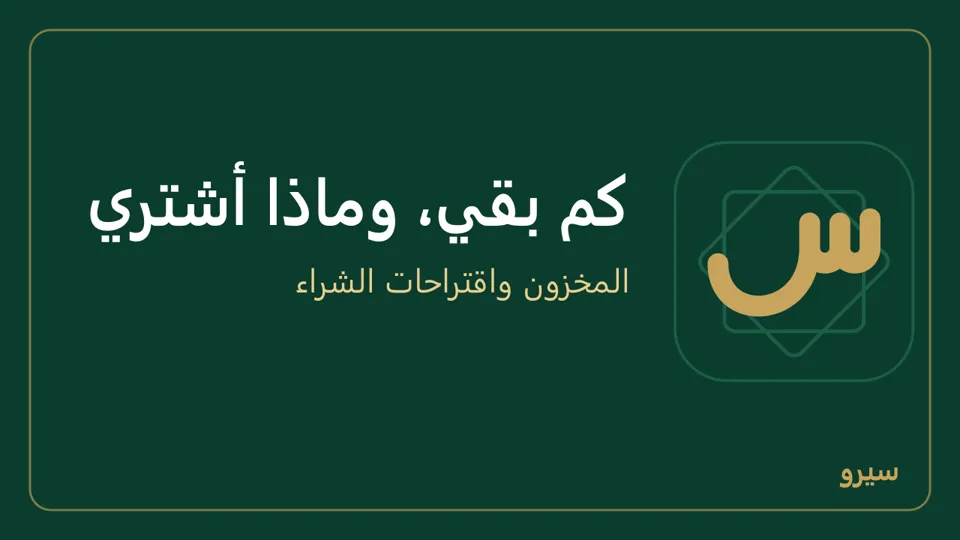
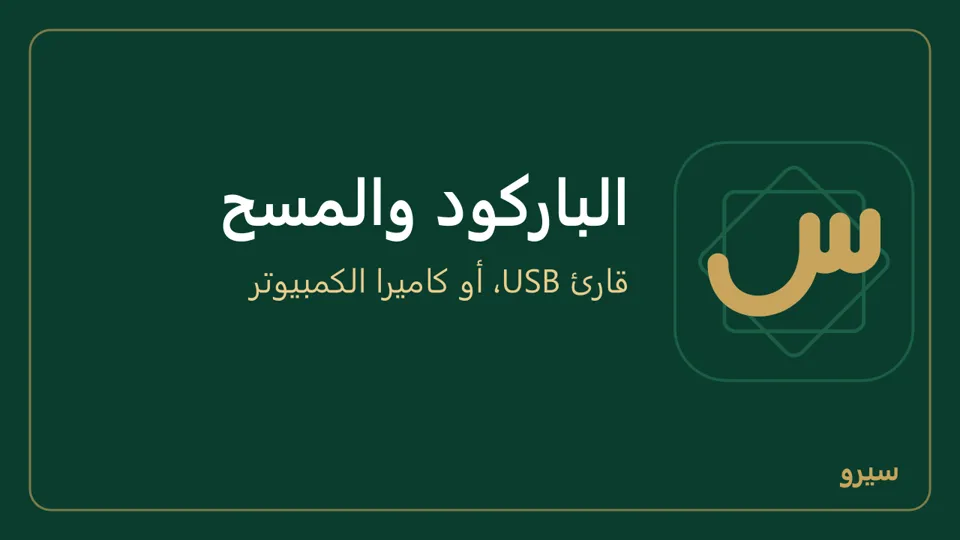
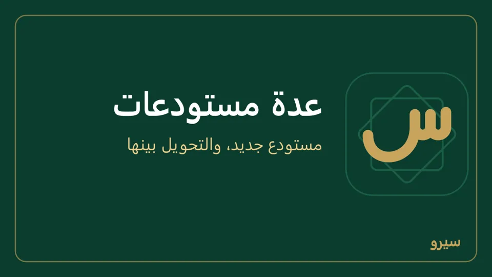

المخزون والأصناف
كل صنف بباركوده وسعره ووحدته. الكميات تتغيّر وحدها مع البيع والشراء، والجرد يصحّح الفرق.
- إضافة صنف
- صورة الصنف
- تعديل صنف أو سعره
- رفع الأسعار أو تخفيضها بنسبة
- حذف صنف أو أرشفته
- مجموعات الأصناف
- متغيرات: ألوان ومقاسات
- البيع والشراء بأكثر من وحدة (بيضة، صحن، كرتونة)
- كم بقي عندي من كل صنف؟
- الدفعات وتاريخ الانتهاء
- إعادة الطلب: ماذا أشتري؟
- الجرد
- الباركود والمسح
- عدة مستودعات
- أجهزة بالأمانة عند الزبائن
- أصناف كثيرة؟
إضافة صنف
- افتح الأصناف واضغط صنف جديد (يكون مفتوحاً وحده ما دامت القائمة فارغة).
- اكتب الاسم، والباركود إن وُجد، وسعر البيع.
- تحت المخزون والتكلفة: الوحدة (قطعة، كيلو، طن، علبة…)، والمجموعة إن كانت عندك مجموعات. عندك منه الآن؟ اكتب التكلفة (سعر شراء الوحدة) واختر عملتها بجانبها، والكمية الموجودة، مثلاً 50 طن (للمالك والمحاسب). تكلفة بالدولار تُحفظ بالليرة بسعر صرف اليوم، فيخرج الربح صحيحاً. الصنف الذي له تاريخ انتهاء تدخل كميته بفاتورة شراء مع رقم الدفعة.
- اضغط إضافة. لصنف عادي يكفي الاسم والسعر.

بعد الإضافة تتغيّر الكمية والتكلفة وحدهما مع المشتريات والمبيعات، ويصحّحهما الجرد.
- قائمة الأصناف تُظهر تكلفة كل صنف (على الجوال تحت اسمه). والصنف الذي سعره بالدولار يظهر بجانب تكلفته ما تساويه بالدولار بسعر صرف اليوم («≈ 1.00 $»)، فتعرف كم وقف عليك وكم تربح فيه.
في خيارات متقدمة تحت القسمين، لما يحتاجه بعض الأصناف فقط:
- عملة السعر: لصنف تسعّره بالدولار (كيف).
- بلا مخزون: لخدمة لا تُعدّ (توصيل، صيانة)، أو لمنتج مركّب تُخصم قطعه عند كل بيع. شراؤه بفاتورة شراء يُقيَّد على «تكلفة البضاعة المباعة» لا على المخزون، لأنه لا يدخل المستودع.
- له تاريخ انتهاء: للأدوية والأغذية؛ يبيع البرنامج الأقرب انتهاءً أولاً.
- حد إعادة الطلب وكمية الطلب: حين تنزل كميته إلى الحد أو أقل يقترحه البرنامج للشراء.
على الجوال: الأصناف ← جديد: الاسم والباركود (مسح) وسعر البيع أولاً، ثم تحت المخزون والتكلفة الوحدة والنوع (مخزّن، بدفعات وصلاحية، بلا مخزون) وحد إعادة الطلب وكمية الطلب، والكمية الموجودة وتكلفة الوحدة لمن عنده صلاحية المحاسبة، وعملة التكلفة تحتهما (هي عملة السعر حتى تغيّرها). اضغط صنفاً لتعديله.
صورة الصنف
لكل صنف صورة واحدة، ولكل متغير (لون أو مقاس) صورته. تظهر في قائمة الأصناف وعلى أزرار نقطة البيع وفي بحث فاتورة الجوال.
- صنف جديد: اختر الصورة قبل إضافة. صنف موجود: اضغط صورة بجانب اسمه في القائمة، واختر الملف ثم حفظ.
- صورة أخرى تحلّ محلّ الأولى، واحذف الصورة يتركه بلا صورة.
- تُصغَّر الصورة على الجهاز قبل حفظها (أطول ضلع 1200 بكسل، نحو 100 كيلوبايت)، فلا تثقل البرنامج ولا المزامنة.
- تصل الصورة كل الأجهزة المتزامنة مرة واحدة، وتعديل اسم الصنف أو سعره لا يرسلها من جديد. على جهاز لم تصله بعد يظهر مربع فارغ حتى تصل.
- لمن عنده متجر على ديكس: تُرفع الصورة مع الصنف حين يُنشر، وتغييرها لاحقاً يغيّر صورته الرئيسية في المتجر.
- الصور داخل النسخة الاحتياطية، ولا تظهر على الفواتير المطبوعة.
على الجوال: اضغط الصنف في الأصناف، ثم تحت الصورة: صوّر بالكاميرا أو من المعرض. يسأل الجوال أول مرة عن إذن الكاميرا أو الصور.
تعديل صنف أو سعره
- في الأصناف اضغط تعديل تحت اسم الصنف: الاسم والباركود والوحدة وسعر البيع والمجموعة، ثم حفظ.
- مخزون تحت الاسم: تاريخ الانتهاء وحد إعادة الطلب وكمية الطلب.
- التكلفة لا تُعدَّل: تحسبها المشتريات وحدها. والكمية يصحّحها الجرد.
- أسعار كثيرة دفعة واحدة: بنسبة أو من Excel. سعر خاص لزبائن الجملة: قوائم الأسعار.
على الجوال: اضغط الصنف في الأصناف، وصحّح ما تريد ثم احفظ.
رفع الأسعار أو تخفيضها بنسبة
- في الأصناف اضغط تعديل الأسعار بنسبة (على الجوال أيقونة النسبة المئوية بجانب البحث).
- الأصناف: كل الأصناف، أو مجموعة (مع مجموعاتها الفرعية، مثل كل أنواع الشاي)، أو صنف واحد.
- رفع أو تخفيض، والنسبة % مثل 5، والتقريب: أقرب 100 أو 500 أو 1000 ليرة، أو بلا تقريب. علّم وأسعار قوائم الأسعار لهذه الأصناف إن أردت أن تتغيّر أسعار الجملة معها.
- معاينة تعرض كل صنف بسعره الحالي والجديد، وأسعار وحداته الأخرى (الكرتونة) وقوائم الأسعار. لا يُحفظ شيء بعد.
- اضغط طبّق على … صنف: تتغيّر الأسعار كلها دفعة واحدة، ويُسجَّل كل سعر قبل وبعد في سجل التدقيق.
- التقريب لا يغيّر السعر أكثر من 5%: السعر الصغير يُقرَّب إلى مبلغ أصغر (205 إلى أقرب 10 لا 100)، والرفع لا يُنزل سعراً والتخفيض لا يرفعه.
- الصنف المسعّر بالدولار يتغيّر سعره بالدولار، بعيداً عن سعر الصرف، ويُقرَّب إلى السنت. الصنف بلا سعر يبقى كما هو، والتكلفة لا تتغيّر أبداً.
- لمن له تعديل أسعار البيع فقط (الحقول الحساسة). الجهاز التابع يأخذ الأسعار من كمبيوتر الشركة.
حذف صنف أو أرشفته
- في الأصناف اضغط حذف أو أرشفة تحت اسم الصنف؛ الزر يقول ما سيحدث.
- اقرأ ما سيحدث واضغط تأكيد الحذف أو تأكيد الأرشفة.
- صنف بلا فواتير ولا حركات مخزون (أضفته خطأً أو مكرراً) يُحذف نهائياً، ويبقى أثر الحذف في سجل التدقيق.
- صنف له فواتير أو حركات يُؤرشف ولا يُحذف: يختفي من القائمة ومن اختيار الأصناف في البيع والشراء ونقطة البيع والمطعم والتصنيع، ومن البحث واقتراحات إعادة الطلب وملف Excel، وتبقى فواتيره وحركاته وتقاريره كما هي.
لا يُؤرشف صنف:
- في المخزون منه كمية: تقول الرسالة كم وفي أي مستودع. صفّرها بـالجرد ثم أرشفه.
- قالب له متغيرات حالية: أرشف المتغيرات أولاً.
- داخل في وصفة فعّالة: تذكر الرسالة الوصفة؛ احذفه منها بنسخة جديدة في التصنيع.
للاستعادة: المؤرشفة أعلى الأصناف ثم استعادة، أو استورد الصنف من Excel باسمه فيعود. باركود الصنف المؤرشف يبقى له، فإن أردته لصنف آخر استعد المؤرشف وامسح باركوده.
على الجوال: اضغط الصنف ثم حذف أو أرشفة أسفل النموذج، والمؤرشفة أعلى القائمة؛ اضغط صنفاً مؤرشفاً لاستعادته.
مجموعات الأصناف
رتّب الأصناف في مجموعات رئيسية (مواد غذائية، منظفات…) وتحت كل منها مجموعات فرعية (حبوب، زيوت…). مثال: مجموعة «رز» وفيها رز مصري ورز إسباني طويل ورز سيلاني، كل منها صنف بسعره وباركوده. المجموعات للفرز والبحث فقط، ولا تغيّر شيئاً في الحسابات.
- في الأصناف افتح المجموعات.
- اكتب اسم المجموعة واترك مكانها مجموعة رئيسية، أو اختر «تحت» مجموعة رئيسية لتصير فرعية، ثم إضافة مجموعة.
- اختر المجموعة لكل صنف عند إضافته أو من تعديل.
- أزرار المجموعات فوق القائمة تعرض أصناف مجموعة واحدة؛ الرئيسية تعرض فرعياتها معها، وبلا مجموعة تعرض ما لم يُرتَّب بعد.
- في نقطة البيع تظهر الأزرار نفسها فوق الأصناف.
- على الجوال: في الأصناف أيقونة المجموعات بجانب جديد: اكتب اسم المجموعة واختر مكانها، ثم إضافة مجموعة. وفي الصنف (جديد أو بالضغط عليه) اختر المجموعة.
- تغيير مجموعة صنف له متغيرات ينقل متغيراته معه.
- تُحذف المجموعة الفارغة فقط: انقل أصنافها أولاً.
- من Excel: عمود المجموعة يأخذ «مواد غذائية › حبوب»، والمجموعة غير الموجودة تُنشأ. الاستيراد من Excel.
على الجوال: الأصناف ← زر المجموعات لإضافتها وتعديلها، واختيار المجموعة تحت البحث يعرض أصنافها. في الفاتورة يكفي أن تكتب اسم المجموعة في بحث الأصناف.
متغيرات: ألوان ومقاسات
صنف واحد بألوان أو مقاسات (قميص أحمر وأزرق بمقاس S وM وL) يصير أصنافاً منفصلة، لكل منها مخزونه وسعره وباركوده.
- في الأصناف افتح متغيرات تحت الصنف.
- اكتب المحاور هكذا: «اللون: أحمر, أزرق؛ القياس: S, M, L» واضغط ولّد.
- يصير الصنف الأصلي قالباً لا يُباع، وتظهر متغيراته في البيع والشراء والجرد.
- الصنف الذي له مخزون لا يصير قالباً: انقل كميته أو صفّرها بالجرد أولاً.
على الجوال: اضغط الصنف في الأصناف، اكتب المحاور بالطريقة نفسها واضغط ولّد المتغيرات.
البيع والشراء بأكثر من وحدة (بيضة، صحن، كرتونة)
صنف يُعدّ في المستودع بوحدة (بيضة) ويُباع ويُشترى أيضاً بوحدات أكبر: صحن = 30 بيضة، كرتونة = 360 بيضة. المخزون والتكلفة يبقيان بالوحدة الأساسية، فكرتونة مباعة تُخرج 360 بيضة بالضبط بتكلفة البيضة.
- اكتب الوحدة الأساسية للصنف (بيضة)، كما في إضافة صنف.
- في الأصناف افتح وحدات تحت اسم الصنف.
- اكتب اسم الوحدة (صحن)، وبعد علامة = كم بيضة فيها (30)، وسعرها إن كان لها سعر خاص، والباركود إن كان على الكرتونة باركود غير باركود الحبة، واضغط إضافة وحدة. أضف الكرتونة بالطريقة نفسها (360).
- في فاتورة البيع أو الشراء اختر الوحدة من خانة الوحدة في السطر، فيأتي سعرها، واكتب الكمية بها: كرتونة واحدة وصحنان و5 بيضات تُنقص المخزون 425 بيضة.
- السعر الفارغ = سعر البيع × العدد (صحن = 30 × سعر البيضة). قوائم الأسعار تسعّر الوحدة بسعر البيضة فيها × العدد، والنسبة تُخصم من سعر الوحدة.
- سعر الوحدة بعملة سعر الصنف. صنف تنقله إلى الدولار أو منه بـتعديل أو بملف Excel تنتقل أسعار وحداته معه بسعر صرف اليوم (كرتونة بـ 50,000 ل.س تصير 3.85 $ إن كان الدولار 13,000)، فاكتب سعر اليوم في أسعار الصرف قبلها.
- سعر الوحدة سعر بيع: الدور الممنوع من تعديل أسعار البيع (كيف) لا يضعه ولا يغيّره، ولا يغيّر عدد وحدة لها سعرها ولا يحذفها، لا هنا ولا بملف Excel. وكل إضافة أو تعديل أو حذف لوحدة يُسجَّل في سجل التدقيق باسم من فعله.
- في الشراء يُقترح سعر الكرتونة من تكلفة البيضة × 360، وتكلفة البيضة تُحسب من سعر الكرتونة ÷ 360.
- في نقطة البيع لكل وحدة مربّع باسمها، مثل «بيض (كرتونة)»، ومسح باركود الكرتونة يضيف كرتونة. الباركود لصنف واحد أو وحدة واحدة: لا يأخذ صنف آخر باركود وحدة ولا العكس، في الأصناف ولا بملف Excel.
- الفاتورة المطبوعة والمرتجع والتعديل تبقى بالوحدة التي كُتبت بها: المرتجع يعرض كل صنف بوحدته، فتُرجع صحناً من صحون الفاتورة. أما الجرد والنقل بين المستودعات والكمية الموجودة واقتراحات إعادة الطلب فبالوحدة الأساسية.
- وحدة دخلت فواتير على هذا الجهاز لا تُحذف ولا يتغيّر عددها؛ أضف وحدة جديدة باسم آخر. اسمها وسعرها وباركودها يُعدَّلان، ثم حفظ. ما غيّره جهاز آخر في وحدة (عددها مع سعرها) يصل إلى كل الأجهزة كما هو بالمزامنة، وما بيع قبله يبقى بعدده. وحدة عدّل جهازان عددها أو سعرها قبل أن يتزامنا تبقى على كل الأجهزة بعددها وسعرها معاً من آخر تعديل، لا بعدد من جهاز وسعر من آخر، ويظهر ذلك في التعارضات؛ راجعها في وحدات.
- جهازان أضاف كلٌّ منهما وحدة بالاسم نفسه قبل أن يتزامنا تظهر الوحدتان، كلٌّ بعددها؛ غيّر اسم إحداهما من وحدات.
- تعديل الفاتورة يبقي كل سطر بالوحدة وعددها كما كُتب. وحدة غيّر جهاز آخر عددها قبل أن تصله الفاتورة يظهر سطرها بالوحدة الأساسية، بكميته نفسها (2 كرتونة = 720 بيضة).
- المرتجع بوحدة يعود بتكلفة سطر تلك الوحدة في الفاتورة ودفعاته: 5 بيضات بيعت مع كرتونة تعود بتكلفتها هي ومن دفعتها.
- أصناف كثيرة؟ أعمدة الوحدة الثانية وعدد الوحدة الثانية وسعر الوحدة الثانية وباركود الوحدة الثانية (والثالثة) في ملف الأصناف.
على الجوال: اضغط الصنف في الأصناف، ثم تحت وحدات أخرى اضغط إضافة وحدة: اسم الوحدة والعدد وسعر البيع والباركود (اختياري)، ثم حفظ الوحدة. اضغط وحدة لتعديلها أو حذف الوحدة. في فاتورة بيع وفاتورة شراء وبيع بالكاميرا تظهر كل وحدة في قائمة الأصناف باسمها، مثل «بيض (كرتونة)»، ومسح باركودها يختارها.
كم بقي عندي من كل صنف؟
- المخزون يعرض كل صنف: الموجود، والمحجوز للطلبات، والقادم من المشتريات، والتكلفة.
- يقترح البرنامج شراء ما نزل تحت حد إعادة الطلب: إعادة الطلب.

- صنف أضفته بلا كمية من قبل؟ اكتب كميته الفعلية في الجرد.
- بعت قبل أن تسجّل الشراء (الكمية بالسالب)؟ حين تُسجَّل فاتورة الشراء أو أمر الإنتاج أو الرصيد الافتتاحي يصحّح البرنامج تكلفة ما بِيع إلى سعره الحقيقي بقيد «فرق تكلفة المخزون». وكذلك حين تُرجع أو تُعدّل أو تُلغي مشتريات بِيع جزء منها، فتبقى قيمة المخزون في الحسابات مساوية لما في المستودع. وإن بِيع على جهاز واشتُري على آخر قبل أن يتزامنا فالتصحيح بعد المزامنة.
- الكمية ضعف ما عندك؟ غالباً كتبتها في الكمية الموجودة حين أضفت الصنف ثم سجّلت فاتورة شرائها أيضاً، فدخلت مرتين. صحّحها بـالجرد بالعدد الفعلي. الكمية الموجودة لما عندك من قبل البرنامج فقط؛ البضاعة الجديدة تدخل بفاتورة الشراء وحدها.
على الجوال: المستودعات والكميات يعرض الموجود والمحجوز والقادم والمتاح لكل صنف، لمستودع واحد أو للكل، مع قيمة المخزون. والأصناف يعرض كمية مستودع هذا الجهاز، ومعها «في مستودعات أخرى» إن كان للصنف كمية في غيره: الصفر هنا لا يعني أن الصنف غير موجود.
الدفعات وتاريخ الانتهاء
- اجعل الصنف له تاريخ انتهاء (عند إضافته: في خيارات متقدمة؛ على الجوال: النوع بدفعات وصلاحية).
- في فاتورة الشراء اكتب لكل سطر منه رقم الدفعة وتاريخ انتهائها (على الجوال مثل 31/12/2026).
- البيع يسحب من الأقرب انتهاءً أولاً، ولا يبيع من دفعة منتهية. البيع لا يُنشئ دفعة: رقم دفعة غير موجود يُرفض.
- مرتجع الشراء يُخرج الدفعة التي جاءت بها تلك الفاتورة نفسها، لا الأقرب انتهاءً.
- ما ينتهي خلال 30 يوماً أو انتهى: أسفل المخزون على الكمبيوتر، والدفعات والصلاحية على الجوال. وكميات كل دفعة لصنف تختاره: دفعات صنف في الشاشتين (على الكمبيوتر اختر الصنف واضغط عرض؛ مع مستودع مختار تظهر دفعاته فيه فقط).
- المنتهي يُتلف هكذا: فحص جودة يسجّله مرفوضاً فينتقل إلى الحجر، ثم إتلاف من هناك.
إعادة الطلب: ماذا أشتري؟
- ضع لكل صنف حد إعادة الطلب، وكمية الطلب إن كنت تشتري كمية ثابتة.
- حين تنزل كميته المتاحة إلى الحد أو أقل يظهر في اقتراحات الشراء (وصلت حد إعادة الطلب) أسفل المخزون (على الجوال: إعادة الطلب) مع آخر مورد وآخر سعر.
- اختر المورد واضغط إنشاء طلب الشراء. الطلب المفتوح يُحسب قادماً، فلا يُقترح الصنف مرتين ويُطرح ما طُلب من الكمية المقترحة، ويُستلم من طلبات الشراء.
الجرد
- افتح المخزون ← الجرد الفعلي واختر المستودع. لجرد يوم سابق اختر التاريخ أيضاً، ثم عرض: يصير في الدفاتر ما كان في الدفاتر ذلك اليوم.
- اكتب الكمية المعدودة لكل صنف، أو امسح الباركود بـ مسح بالكاميرا.
- اضغط اعتماد الجرد. يُصحَّح المخزون ويُقيَّد الفرق نقصاً أو زيادة.
- الفرق يُحسب على كمية يوم الجرد، فما بِيع أو اشتُري بعده يبقى كما هو. والكميات الموزونة تُعدّ بالغرام (1.255 كغ). ولا يُسجَّل جرد بتاريخ داخل فترة مقفلة، ولا جرد لصنف بتاريخ أقدم من جرد سُجّل له بعده في المستودع نفسه: اجعل تاريخه يوم ذلك الجرد أو بعده.

على الجوال: الجرد يجرد مستودع هذا الجهاز: ابحث بالاسم أو الباركود، اكتب المعدود، ثم تسجيل الجرد. زر مسح بجانب البحث يقرأ الباركود بالكاميرا ويزيد معدود الصنف واحداً مع كل مسح. إن كان للشركة أكثر من مستودع فاختر أولاً المستودع الذي تجرده، واكتب ما فيه وحده: سطر الصنف يقول «في مستودعات أخرى» ما في غيره، فلا تعدّ البضاعة نفسها في مستودعين فتتضاعف كميتها. تاريخ وملاحظة أعلى القائمة لجرد يوم سابق، ومعه يصير «في الدفاتر» ما كان ذلك اليوم. وأسفلها جرود سابقة بفروقات كل جرد.
الباركود والمسح
- على الكمبيوتر: أي قارئ باركود يُوصل بالـ USB يعمل مباشرة، كأنه لوحة مفاتيح. امسح في خانة البحث أو خانة الباركود.
- بلا قارئ: مسح بالكاميرا بجانب خانة الباركود عند إضافة صنف أو تعديله، وفي نقطة البيع والجرد، يقرأ بكاميرا الكمبيوتر.

- ميزان يطبع ملصقات باركود: الإعدادات ← نقطة البيع ← باركود الميزان (على الكمبيوتر فقط).
على الجوال: زر مسح يفتح الكاميرا. ثبّت الجوال لحظة على الباركود. تفتح ولا تقرأ؟ الحل.
عدة مستودعات
صفحة المخزون تعرض كل مستودع وحده، والنقل بينها يحفظ الكميات ولا يغيّر الحسابات. لكل جهاز مستودعه، وسيارة المندوب مستودع.
- مستودع جديد: مستودع جديد ثم إضافة.
- مستودع هذا الجهاز (منه تخرج مبيعاته وإليه تدخل مشترياته): يختاره المالك. الجوال أو التابلت المربوط بكمبيوتر الشركة يبدأ بمستودع فارغ باسمه («مستودع M1»)؛ إن كان يبيع من بضاعة المستودع الرئيسي فاجعل ذلك مستودعه.
- طريقة التكلفة: متوسط مرجح (الافتراضي، متوسط كل المشتريات) أو الوارد أولاً (FIFO) (سعر أقدم شحنة باقية، بترتيب تسجيل فواتير الشراء: فاتورة شراء تُسجَّل متأخرة أو تُعدَّل تصير أحدث شحنة). بها تُحسب تكلفة ما يُباع، وبها تُحسب قيمة المخزون فوق القائمة. غيّرها بعد استشارة محاسبك. عند التحويل إلى المتوسط يبدأ متوسط كل صنف من قيمة ما بقي منه في الدفاتر، ويُسجَّل ذلك في سجل التدقيق.
- التحويل: اختر من وإلى والأصناف والكميات، ثم تحويل. لا يُحوَّل أكثر مما في المستودع المصدر. لكل تحويل سند يُطبع أو يُرسل: كيف.

على الجوال: المستودعات والكميات ← المستودعات للإضافة واختيار مستودع الجهاز، وتحويل مخزون للنقل بين المستودعات مع مسح الباركود، بتاريخه وملاحظته.
أجهزة بالأمانة عند الزبائن
جهاز يبقى ملكك وتضعه عند زبون ولا يدفع ثمنه (ملطف جو، براد عرض، آلة قهوة) ليس بيعاً، فلا تكتب له فاتورة بيع: الفاتورة تجعل ثمنه ديناً عليه وتخرجه من مخزونك. اجعل لكل زبون مستودعاً باسمه وانقل الجهاز إليه:
- في المخزون تحت المستودعات اكتب في مستودع جديد اسماً مثل «أمانة: محل أبو أحمد»، ثم إضافة.
- في تحويل بين المستودعات: من مستودعك، إلى «أمانة: محل أبو أحمد»، الجهاز وعدده، وفي ملاحظة ما تريد تذكّره (رقمه التسلسلي، مكانه في المحل)، ثم تحويل. يُرقَّم التحويل ويبقى في قائمة التحويلات بتاريخه. اضغط طباعة السند فوراً بعده، أو طباعة بجانبه في القائمة، فيُطبع «سند تحويل مخزون» بالجهاز وعدده واسم مستودع الزبون، وتحته توقيع المسلّم والمستلم: هذه ورقة الأمانة التي يوقّعها الزبون.
- أين أجهزتي؟ اختر مستودع «أمانة: …» في المخزون فيعرض ما عند ذلك الزبون، وكل المستودعات يعرض كم عندك من الجهاز في كل مكان. الجهاز يبقى ضمن قيمة مخزونك لأنه ملكك، ولا يُكتب على الزبون دين بثمنه.
- أعاد الزبون الجهاز أو نقلته لزبون آخر؟ حوّله من مستودع الأمانة إلى مستودعك أو إلى مستودع الزبون الآخر.
- ما يدفعه الزبون كل شهر (الزيت، العبوة، الصيانة) فاتورة بيع عادية؛ وإن كان ثابتاً فاجعلها فوترة مجدولة تصدر كل شهر وحدها، فيظهر في كشف حسابه ما دفع وما بقي عليه.
- مستودع الأمانة لا يُختار مستودع هذا الجهاز، فلا يبيع منه أحد.
على الجوال: المستودعات والكميات ← المستودعات لإضافة مستودع الأمانة، وتحويل مخزون لنقل الجهاز إليه أو منه. بعد تحويل يظهر السند مع مشاركة PDF لترسله للزبون على واتساب، وطباعة ونص؛ ولتحويل سابق اضغطه في آخر التحويلات.
أصناف كثيرة؟
أدخلها دفعة واحدة من Excel مع كمياتها وأسعارها: الاستيراد من Excel.
على الجوال: زر Excel في الأصناف (كيف).